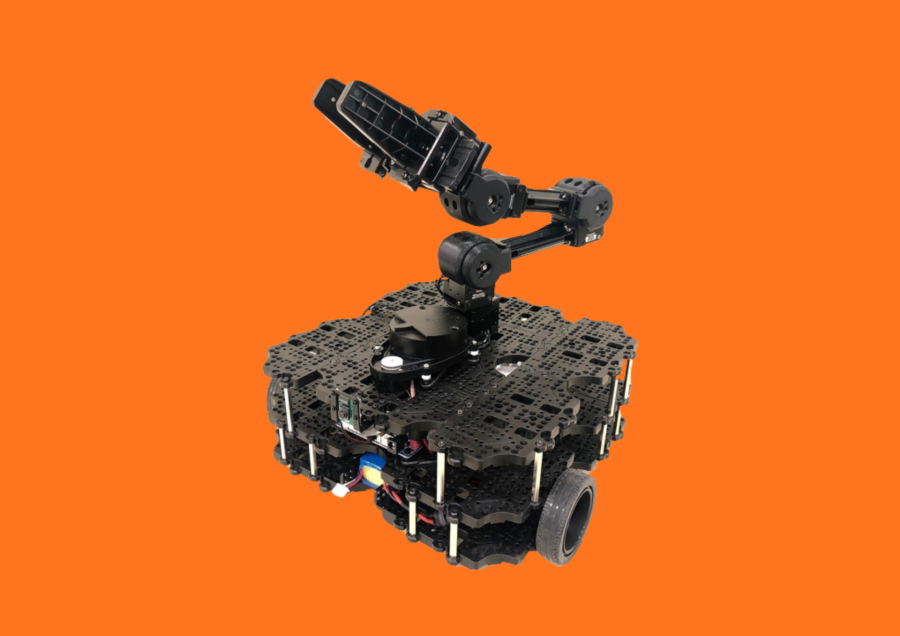
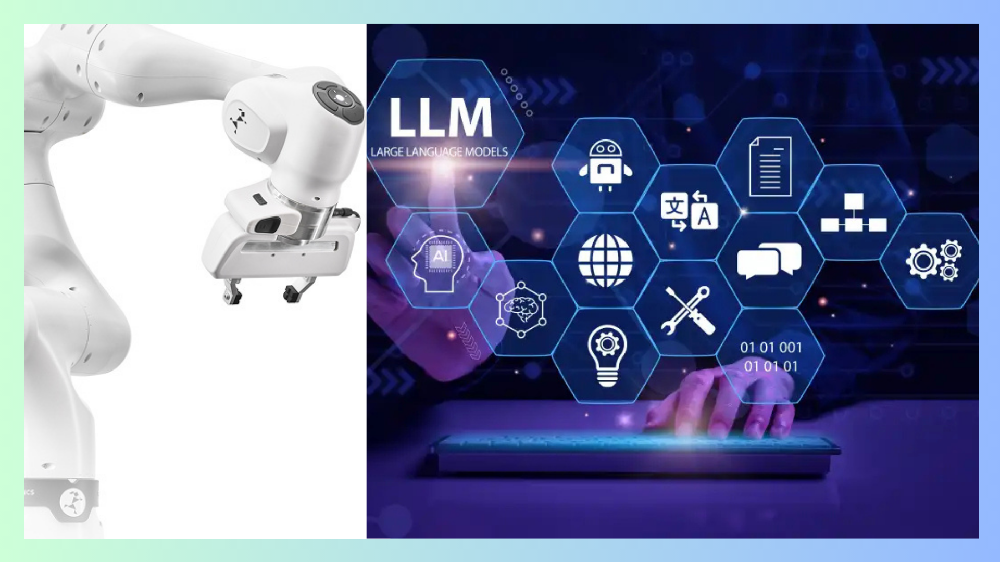
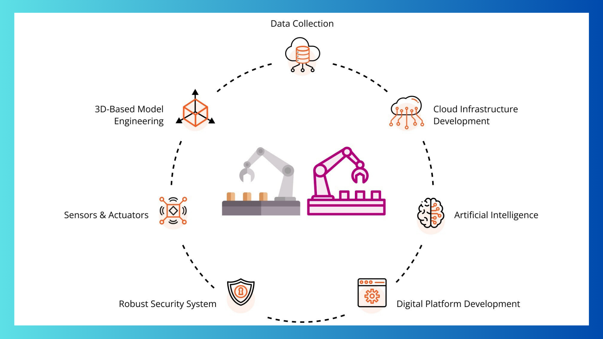
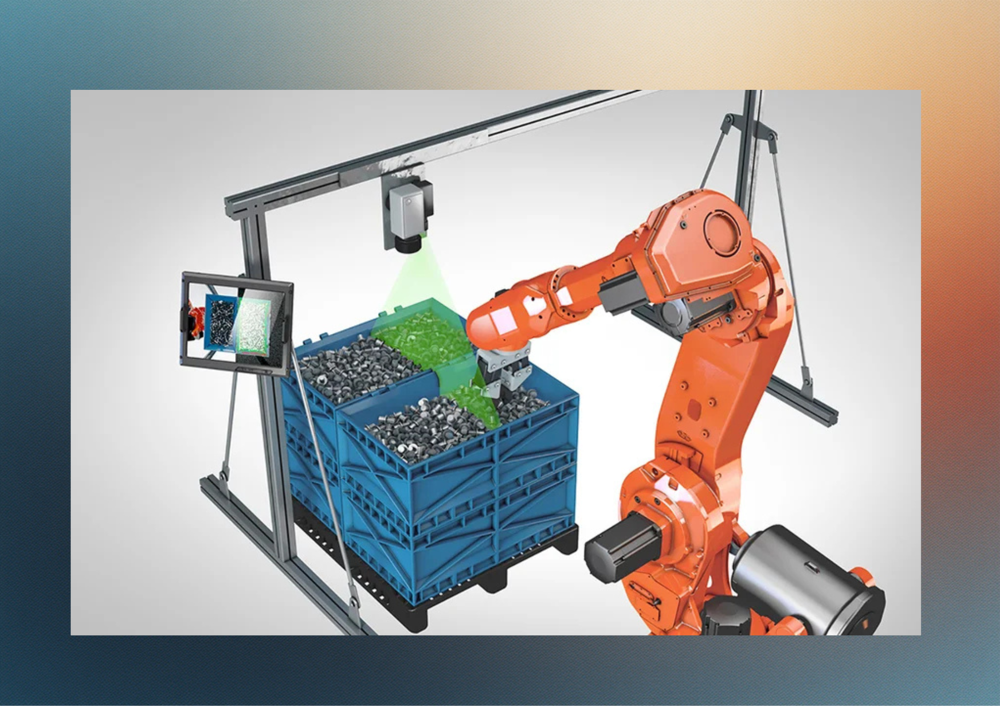
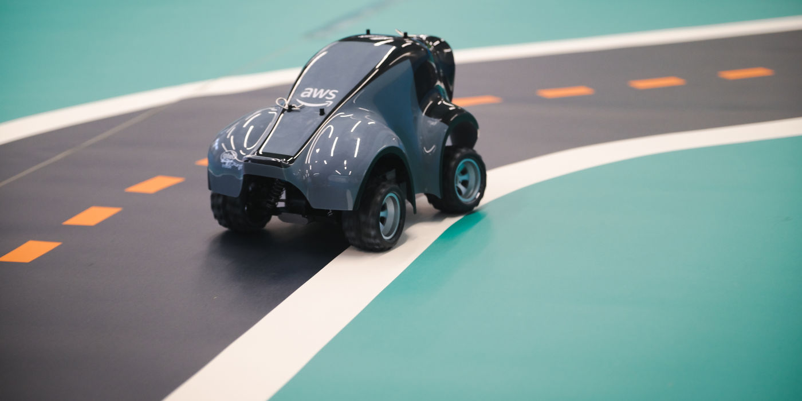

I am a robotics engineer specializing in autonomous systems, simulation development, and intelligent robotic behavior. My work focuses on bridging the sim‑to‑real gap by building high‑fidelity virtual environments, enabling safer, faster, and more reliable robotic testing and deployment. I’m particularly passionate about reinforcement learning, imitation learning, and control strategies that allow robots to interact with the world in more adaptive, human‑like ways.
I hold a Master’s degree in Electrical Engineering from the University of Stuttgart, where I worked on SLAM, sensor fusion, and AI‑driven perception for autonomous robots. My experience spans autonomous navigation, computer vision, embedded systems, and cybersecurity for intelligent machines, including work at Bosch, Itemis AG, and Tata Consultancy Services.
When I’m not building or experimenting with robots, you’ll find me hiking, exploring new cuisines, or diving into creative hobbies that keep me curious and inspired.
Experience
<
Internships
Projects

Autonomous Mobile Robot with SLAM & Perception
Master’s Thesis · University of Stuttgart
Full-stack autonomous navigation system integrating SLAM, perception,
and motion planning for real-world robotic deployment.

Failure Mode Identification in Robotic Systems
Research Project · University of Stuttgart
Research-driven investigation into explainable AI methods
for diagnosing and recovering robotic failures.

Digital Twin for Robotic Condition Monitoring
ROS2 · Gazebo · Python
Digital twin–based monitoring system for predictive maintenance
and robotic system diagnostics.

Bin Picking Cell Control – ROS2 + Docker + HMI
Industrial Simulation · macOS Compatible
Industrial-style bin picking cell simulation integrating ROS2 nodes,
Dockerized services, Flask APIs, and a real-time web-based HMI for
control and monitoring.

AWS DeepRacer
Reinforcement Learning · Autonomous Racing
Competition project focused on training autonomous racing agents using reinforcement learning, simulation, and reward engineering.